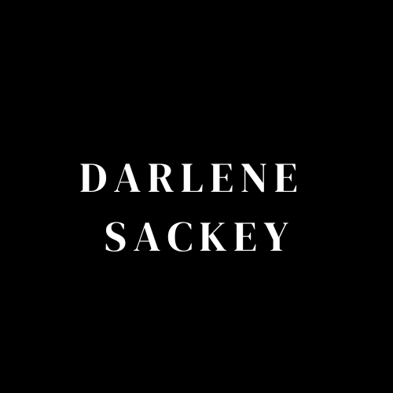

Darlene Sackey's Profile

Hello, I am a second year student at Yukon University and taking a Multimedia class to learn about
coding.
Work Experience
Front Desk Clerk- Best Western Hotel
2021-September 2022
Answering and returning phone calls about customers order inquiries
Track transactions on balance sheets and report any discrepancies
Monitors PMS
Reviewed various reservation and in-house guest reports
Ensured all paperwork completed at the end of my shift
Mark's Work Warehouse-Sales Associate
September 2018-May 2021
Restocked and organized merchandise in various departments
Processed transcations such as cash, credit/debit cards using Point of Sale System
Fulfilled and processed online orders
Track transactions on balance sheets and report any discrepancies
Education
- Porter Creek Secondary High School
- Yukon University